Overview
AniBIM FT is organized by ribbon panels. Use the documentation links or contextual help to jump directly to the selected tool.
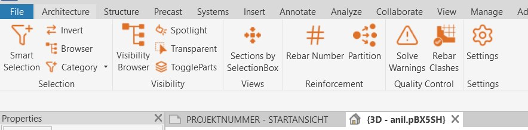
Selection Panel
Smart Selection
Select model elements by category and parameter rules.
How to use
- Choose a category.
- Select a parameter and value.
- Add more rules if required.
- Press OK to select matching elements.
- Use Z, I, R, H and T for quick view actions.
Settings
Controls default matching mode, search scope, fixed start category, parameter filtering, current-selection input, and default actions after OK.

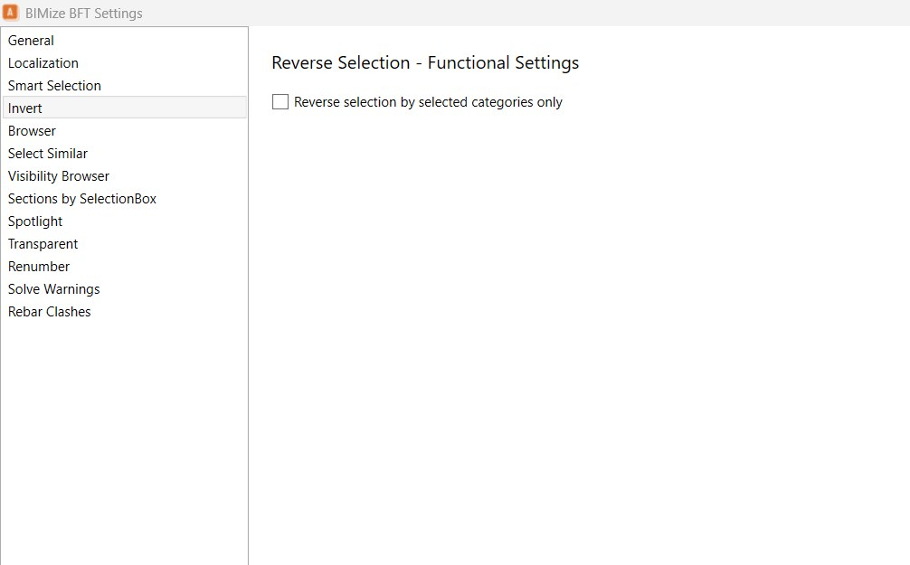
Invert
Reverses the current selection in the active view.
How to use
- Select elements.
- Click Invert.
- The tool selects all other visible elements.
Settings
Optionally restrict the reverse selection to the categories of the selected elements.
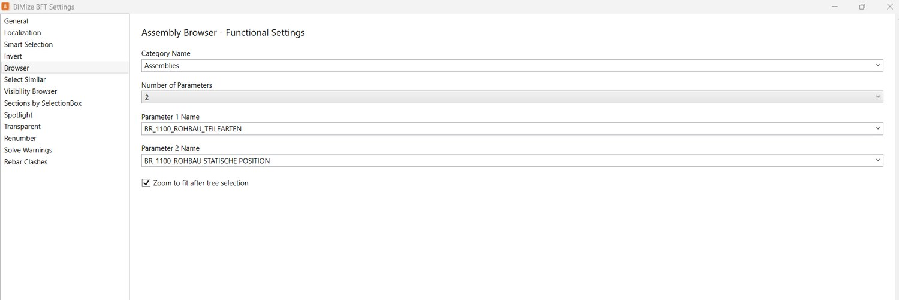
Browser
Dockable browser for assemblies or configured model categories.
How to use
- Open the Browser.
- Search or expand the tree.
- Select nodes to select elements in Revit.
Settings
Defines the browser category, grouping parameters, and zoom-to-fit behavior.
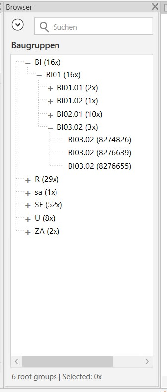
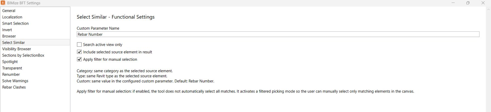
Category / Select Similar
Selects similar elements using category, type, or a configured custom parameter.
How to use
- Start the tool.
- Pick a source element.
- The tool selects matching elements or filters manual picking.
Settings
Defines the custom parameter name and whether the search is limited to the active view.
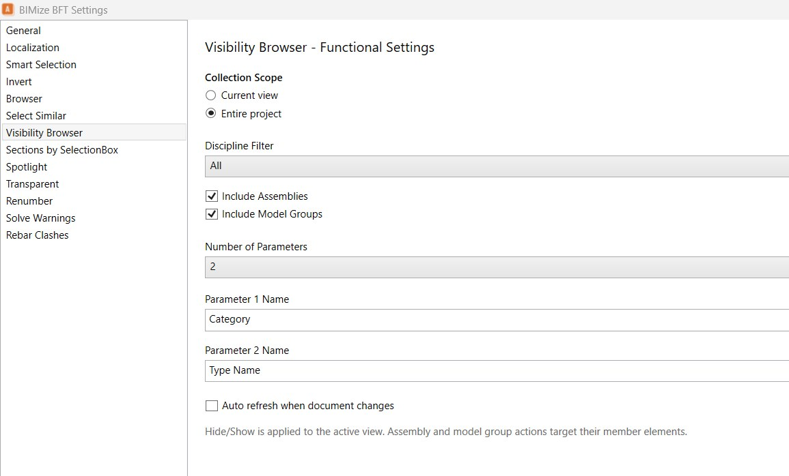
Visibility Panel
Visibility Browser
Dockable browser for controlling visibility by categories, groups, assemblies, and grouped parameters.
How to use
- Open the Visibility Browser.
- Check or uncheck items.
- Expand categories for detailed control.
Settings
Controls current-view or project scope, discipline filter, group inclusion, assembly inclusion, grouping parameters, and auto-refresh.

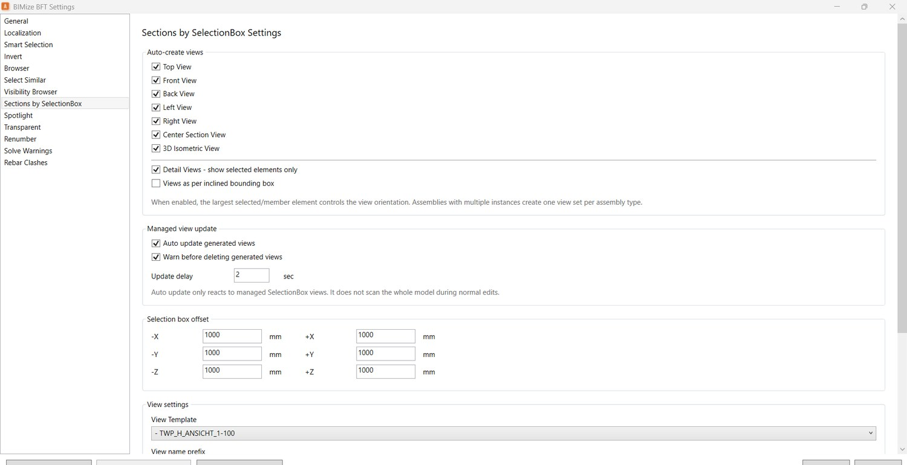
Spotlight
Fades the surrounding context and keeps selected elements visually clear.
How to use
- Select target elements.
- Click Spotlight.
- Adjust context transparency in settings if needed.
Settings
Controls context transparency. Recommended value: 70-85%.
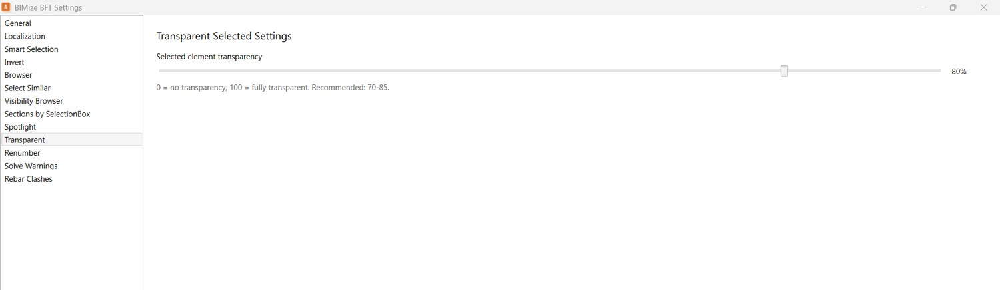
Transparent
Makes the selected elements transparent.
How to use
- Select elements.
- Click Transparent.
- Use settings to control transparency strength.
Settings
Controls selected-element transparency. Recommended value: 70-85%.
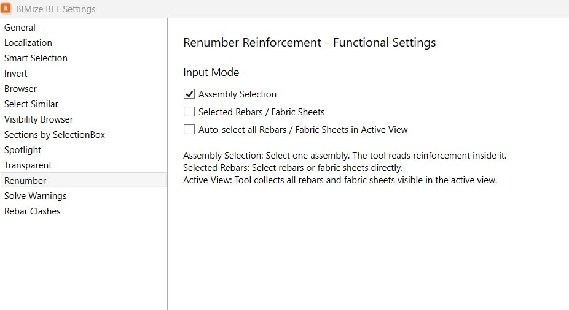
ToggleParts
Toggles Revit Parts visibility for part-based model review.
How to use
- Open a view with part-capable elements.
- Click ToggleParts.
- Switch between original elements and Parts display.
Views Panel
Sections by SelectionBox
Creates controlled views around selected elements or assemblies.
How to use
- Select the target element or assembly.
- Run the tool.
- The configured views are created with offsets, templates, and naming rules.
Settings
Controls which views are created, managed update behavior, selection box offsets, view templates, prefixes, and view parameters.
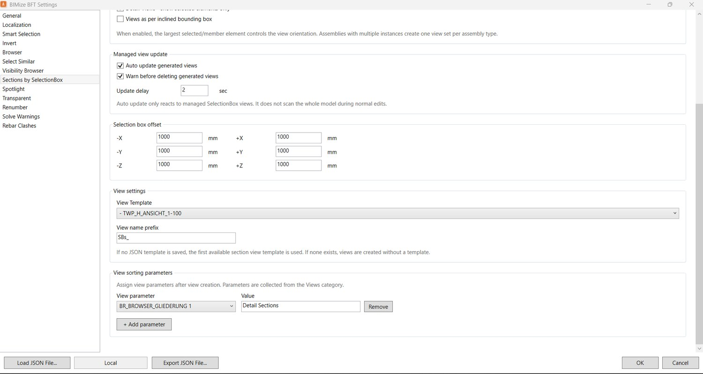
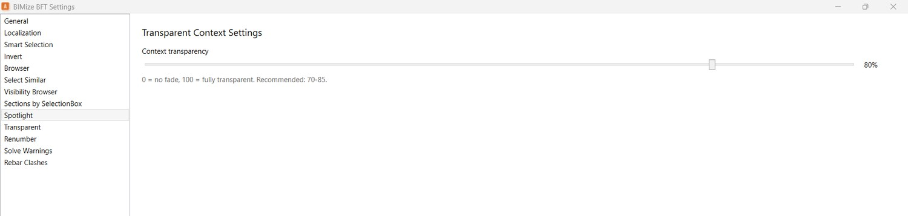
Reinforcement Panel
Rebar Number
Renumbers Rebar and Fabric Sheet elements safely by partition.
How to use
- Select the configured input mode.
- Open the tool.
- Review future numbers.
- Move rows up or down.
- Press OK to apply.
Settings
Controls whether the input comes from one assembly, selected rebars/fabric sheets, or all visible reinforcement in the active view.

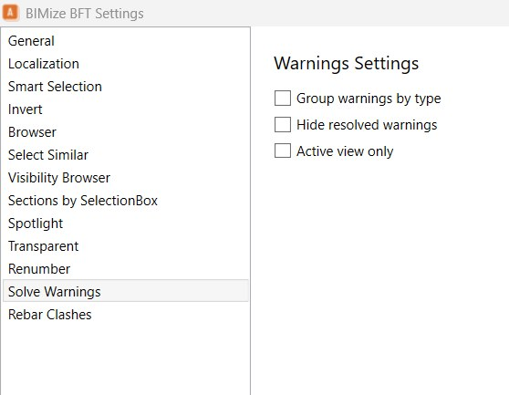
Partition
Assigns reinforcement to a target partition with a start number.
How to use
- Select reinforcement elements.
- Open Partition.
- Choose or type the target partition.
- Set the start number.
- Click Apply.

Quality Control Panel
Solve Warnings
Lists Revit warnings and helps isolate affected elements.
How to use
- Open Solve Warnings.
- Use Group by type, Hide resolved, or Active view only as needed.
- Select a warning row.
- Click Isolate to focus the affected elements.
Settings
Controls grouping by warning type, hidden resolved warnings, and active-view-only filtering.

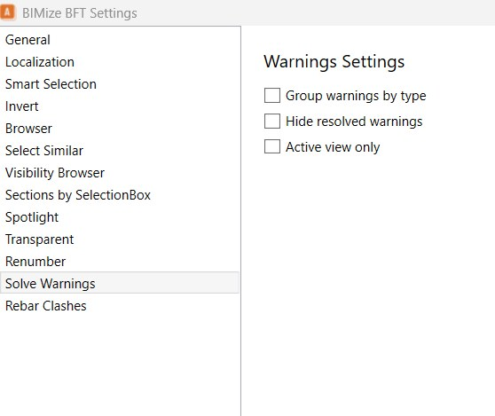
Rebar Clashes
Finds reinforcement collisions and reviews them in a focus view.
How to use
- Open Rebar Clashes.
- Click Check.
- Select a collision.
- The focus view zooms to the clash.
- Resolve the clash in the model.
Settings
Controls zoom, isolate, highlight, 3D focus view, duplicate merging, auto update, tolerance, clash types, and active-view scope.

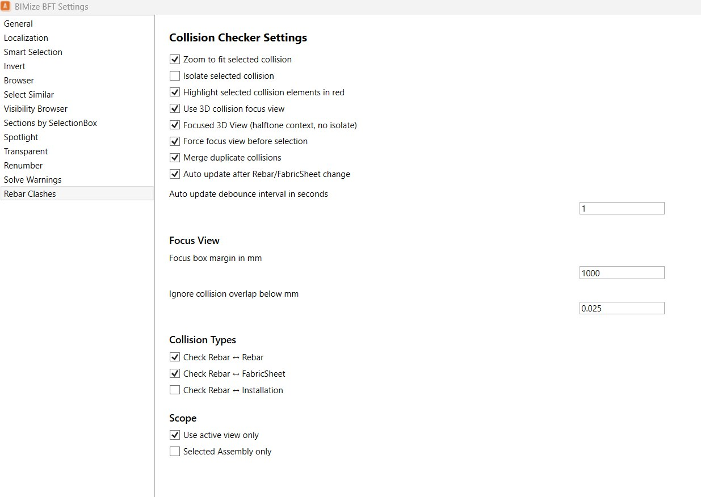
Settings
Settings store default behavior and company configuration for AniBIM FT.
- Load JSON File: load a company settings profile.
- Export JSON File: export current settings.
- Local/Profile box: shows the active settings profile.
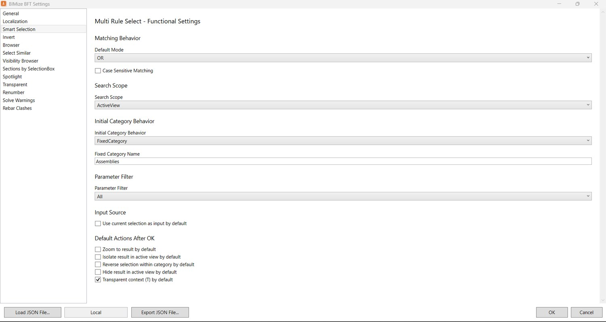
Übersicht
AniBIM FT ist nach Ribbon-Bereichen geordnet. Über die Hilfe-Links kann direkt zur Dokumentation des jeweiligen Werkzeugs gesprungen werden.
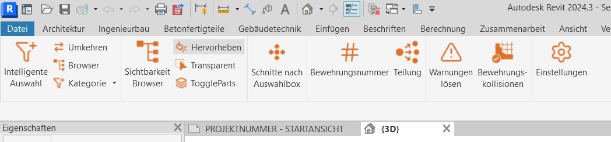
Auswahl
Intelligente Auswahl
Wählt Modellelemente nach Kategorie und Parameterregeln aus.
Verwendung
- Kategorie wählen.
- Parameter und Wert wählen.
- Bei Bedarf weitere Regeln hinzufügen.
- Mit OK passende Elemente auswählen.
- Z, I, R, H und T für schnelle Ansichtsaktionen verwenden.
Einstellungen
Steuert Standardlogik, Suchbereich, feste Startkategorie, Parameterfilter, aktuelle Auswahl als Eingabe und Standardaktionen nach OK.
Umkehren
Kehrt die aktuelle Auswahl in der aktiven Ansicht um.
Verwendung
- Elemente auswählen.
- Umkehren anklicken.
- Alle anderen sichtbaren Elemente werden ausgewählt.
Einstellungen
Optional kann die Umkehrung auf die Kategorien der ausgewählten Elemente begrenzt werden.
Browser
Andockbarer Browser für Baugruppen oder konfigurierte Modellkategorien.
Verwendung
- Browser öffnen.
- Suchen oder Baum aufklappen.
- Knoten auswählen, um Elemente in Revit zu selektieren.
Einstellungen
Definiert Kategorie, Gruppierungsparameter und Zoom-Verhalten.
Kategorie / Ähnliche auswählen
Wählt ähnliche Elemente nach Kategorie, Typ oder konfiguriertem Parameter.
Verwendung
- Werkzeug starten.
- Quellelement wählen.
- Passende Elemente werden ausgewählt oder die manuelle Auswahl wird gefiltert.
Einstellungen
Definiert den benutzerdefinierten Parameter und ob nur in der aktiven Ansicht gesucht wird.
Sichtbarkeit
Sichtbarkeitsbrowser
Andockbarer Browser zur Sichtbarkeitssteuerung von Kategorien, Gruppen, Baugruppen und Gruppierungen.
Verwendung
- Sichtbarkeitsbrowser öffnen.
- Elemente mit Kontrollkästchen ein- oder ausblenden.
- Kategorien für Detailsteuerung aufklappen.
Einstellungen
Steuert Ansichts- oder Projektbereich, Fachbereichsfilter, Gruppen/Baugruppen, Gruppierungsparameter und automatische Aktualisierung.
Hervorheben
Blendet den Kontext transparent aus und hebt ausgewählte Elemente hervor.
Verwendung
- Zielelemente auswählen.
- Hervorheben anklicken.
- Kontexttransparenz bei Bedarf einstellen.
Einstellungen
Steuert die Kontexttransparenz. Empfohlen: 70-85 %.
Transparent
Stellt ausgewählte Elemente transparent dar.
Verwendung
- Elemente auswählen.
- Transparent anklicken.
- Transparenzstärke in den Einstellungen festlegen.
Einstellungen
Steuert die Transparenz ausgewählter Elemente. Empfohlen: 70-85 %.
ToggleParts
Schaltet die Revit-Parts-Sichtbarkeit zur Bauteilprüfung um.
Verwendung
- Ansicht mit partfähigen Elementen öffnen.
- ToggleParts anklicken.
- Zwischen Originalelementen und Parts-Darstellung wechseln.
Ansichten
Schnitte nach Auswahlbox
Erstellt kontrollierte Ansichten um ausgewählte Elemente oder Baugruppen.
Verwendung
- Zielelement oder Baugruppe auswählen.
- Werkzeug starten.
- Konfigurierte Ansichten werden mit Offset, Vorlage und Benennung erstellt.
Einstellungen
Steuert Ansichtstypen, verwaltete Aktualisierung, Offsets, Ansichtsvorlagen, Präfix und Ansichtsparameter.
Bewehrung
Bewehrungsnummer
Nummeriert Stäbe und Matten sicher nach Partitionen neu.
Verwendung
- Eingabemodus in den Einstellungen wählen.
- Werkzeug öffnen.
- Zukünftige Nummern prüfen.
- Zeilen nach oben oder unten verschieben.
- Mit OK anwenden.
Einstellungen
Steuert, ob die Eingabe aus einer Baugruppe, ausgewählten Stäben/Matten oder allen sichtbaren Bewehrungen der aktiven Ansicht kommt.
Teilung
Weist Bewehrung einer Zielpartition mit Startnummer zu.
Verwendung
- Bewehrungselemente auswählen.
- Teilung öffnen.
- Zielpartition wählen oder eingeben.
- Startnummer setzen.
- Anwenden klicken.
Qualitätskontrolle
Warnungen lösen
Listet Revit-Warnungen und isoliert betroffene Elemente.
Verwendung
- Warnungen lösen öffnen.
- Bei Bedarf gruppieren, gelöste ausblenden oder aktive Ansicht nutzen.
- Warnungszeile auswählen.
- Isolieren anklicken.
Einstellungen
Steuert Gruppierung nach Warnungstyp, Ausblenden gelöster Warnungen und Filterung auf aktive Ansicht.
Bewehrungskollisionen
Findet Bewehrungskollisionen und zeigt sie in einer Fokusansicht.
Verwendung
- Bewehrungskollisionen öffnen.
- Check anklicken.
- Kollision auswählen.
- Fokusansicht zoomt zur Kollision.
- Kollision im Modell lösen.
Einstellungen
Steuert Zoom, Isolieren, Hervorheben, 3D-Fokusansicht, Duplikate, automatische Aktualisierung, Toleranz, Kollisionsarten und aktive Ansicht.
Einstellungen
Die Einstellungen speichern Standardverhalten und Unternehmenskonfiguration von AniBIM FT.
- JSON-Datei laden: Unternehmensprofil laden.
- JSON-Datei exportieren: aktuelle Einstellungen exportieren.
- Local/Profilfeld: zeigt das aktive Einstellungsprofil.